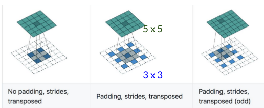
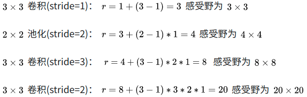
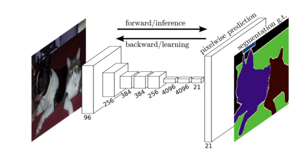

语义分割综述
图像分割有传统一些传统算法，关于传统算法可以参考我的博文图像处理算法总结。
图像分割有类别(semantic) or 实例(instance)分割，其中有2D, 2.5D (depth est.) and 3D。如下图所示

1、分割任务的卷积
普通卷积（Convolution）
![]1563431922907.png)
普通卷积的输出为：（输入-kernel+2pad)/stride+1
反卷积(Deconvolution)

蓝色的是输入feature map (较小),绿色的是输出(较大)
有stride 版本的反卷积是：
先”稀疏化” up-sample输入(蓝色),然后移动filter,正常卷积,得出结果。
所以计算公式为：
W_out = (W_in - 1) *stride - 2pad + kernel
空洞卷积(Dilated convolution)
引入空洞卷积不得不提的是感受野，感受野就是卷积神经网络的每一层输出的特征图(feature map)上的像素点在原图像上映射的区域大小。空洞卷积主要为了解决图像分割中的一些问题而提出的，在FCN中通过pooling增大感受野缩小图像尺寸，然后通过upsampling还原图像尺寸，但是这个过程中造成了精度的损失，那么为了减小这种损失理所当然想到的是去掉pooling层，然而这样就导致特征图感受野太小，因此空洞卷积应运而生。
空洞卷积顾名思义就是卷积的一种，如下图所示这个就是空洞卷积，这里stride:1，padding:0。这里空洞卷积有两种理解，一是可以理解为将卷积核扩展，如图卷积核为 但是这里将卷积核变为
即在卷积核每行每列中间加0。二是理解为在特征图上每隔1行或一列取数与
卷积核进行卷积。当然这里改变stride、padding空洞卷积就会和下图有区别。

空洞卷积的感受野
首先介绍cnn感受野计算公式：
$$
r_{n}=r_{n-1}+(k-1) * \prod_{I=1}^{n-1} s_{i}
$$
这里 $r_{n}$为本层感受野，$r_{n-1}$ 是上层感受野， $s_{i}$是第i层卷积或池化的步长，k为卷积核大小。

空洞卷积的感受野计算方法和上面相同所谓的空洞可以理解为扩大了卷积核的大小
所以空洞卷积的W_out=(W_in-kernel-dilated+2pad)/stride+1
2、语义分割算法回顾
Deeplab V1论文 caffe Deeplab V2论文 tensorflow caffe Deeplab V3论文 tensorflow
语义分割大部分是采用fine tuning的方法，用已有的一些网络结构来提取特征，之后再进行其他的操作，关于fine tuning可以参考博客。进一步学习可以参考这个简单的pytorch实现的图片分类的实战代码
3、分割任务的评价指标
假设K+1类，下标从0到k。 $p_{ij}$表示属于i类的样本被预测为j类。
Pixel Accuracy(PA) = (预测对的像素个数)/(总的像素个数)
$$
PA=\frac{\sum_{i=0}^{k} p_{i i}}{\sum_{i=0}^{k} \sum_{j=0}^{k} p_{i j}}
$$
Mean Pixel Accuracy(MPA)= 平均每类的准确率
$$
M P A=\frac{1}{k+1} \sum_{i=0}^{k} \frac{p_{i i}}{\sum_{j=0}^{k} p_{i j}}
$$
Mean IoU=平均每类的IOU
$$
M I o U=\frac{1}{k+1} \sum_{i=0}^{k} \frac{p_{i i}}{\sum_{j=0}^{k} p_{i j}+\sum_{j=0}^{k} p_{j i}-p_{i i}}
$$
Frequency weighted IoU=加权后每类的IOU
$$
FWIoU=\frac{1}{\sum_{i=0}^{k} \sum_{j=0}^{k} p_{i j}} \sum_{i=0}^{k} \frac{\sum_{j=0}^{k} p_{i j} p_{i i}}{\sum_{j=0}^{k} p_{i j}+\sum_{j=0}^{k} p_{j i}-p_{i i}}
$$
4、经典的算法 Fully-convolutional network（FCN)

训练问题:端到端学习
连接层问题:全连接改为全卷积,支持可变输入
特征图变小问题:利用反卷积向上放大特征图
特征融合问题:利用skip connection融合多层特征提高上采样精细度
FCN将网络全连接层用卷积取代，因此使任意图像大小的输入都变成可能，而且速度比Patch classification方法快很多（Patch classification顾名思义，图像是切成块喂给深度模型的，然后对像素进行分类。使用图像块的主要原因是因为全连接层需要固定大小的图像）
尽管移除了全连接层，但是CNN模型用于语义分割还存在一个问题，就是下采样操作（比如，pooling）。pooling操作可以扩大感受野因而能够很好地整合上下文信息（context中文称为语境或者上下文，通俗的理解就是综合了更多的信息来进行决策），对high-level的任务（比如分类），这是很有效的。但同时，由于pooling下采样操作，使得分辨率降低，因此削弱了位置信息，而语义分割中需要score map和原图对齐，因此需要丰富的位置信息。